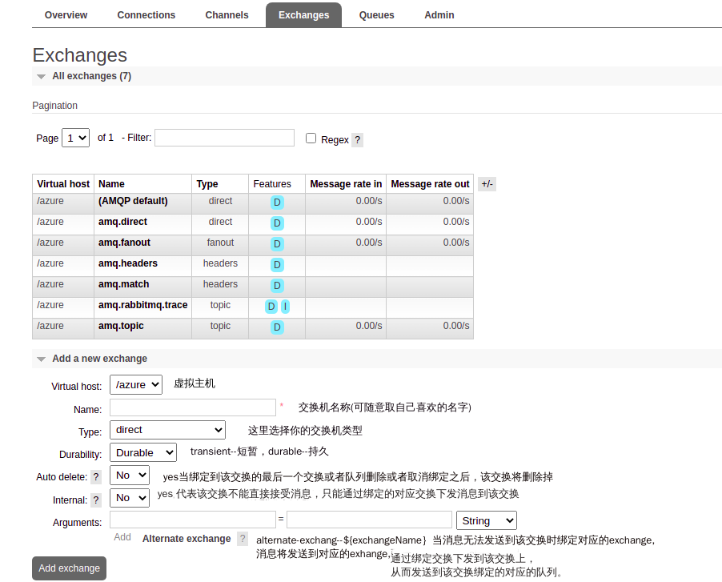
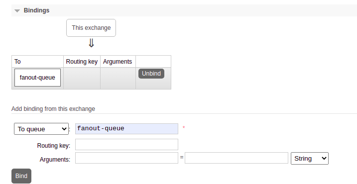
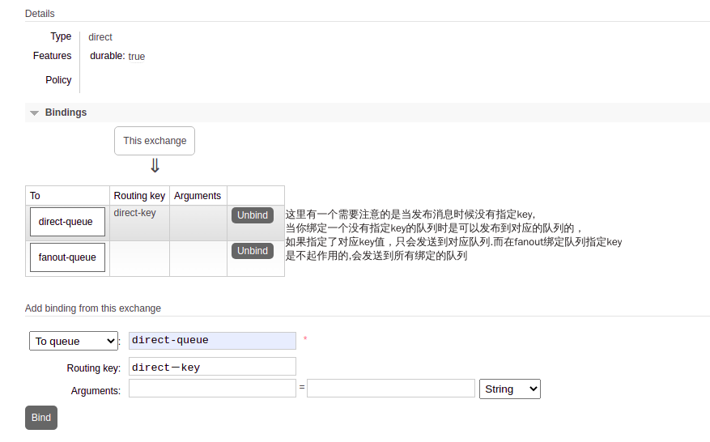
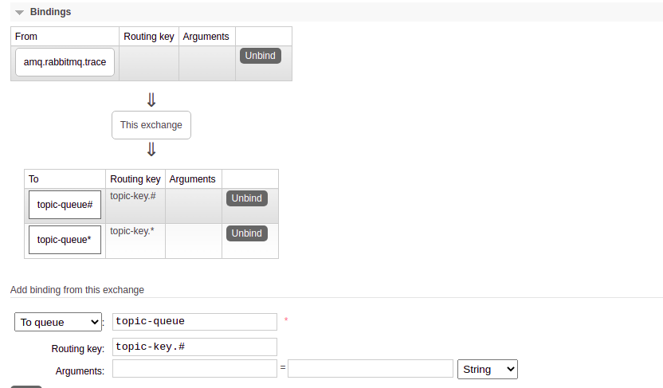
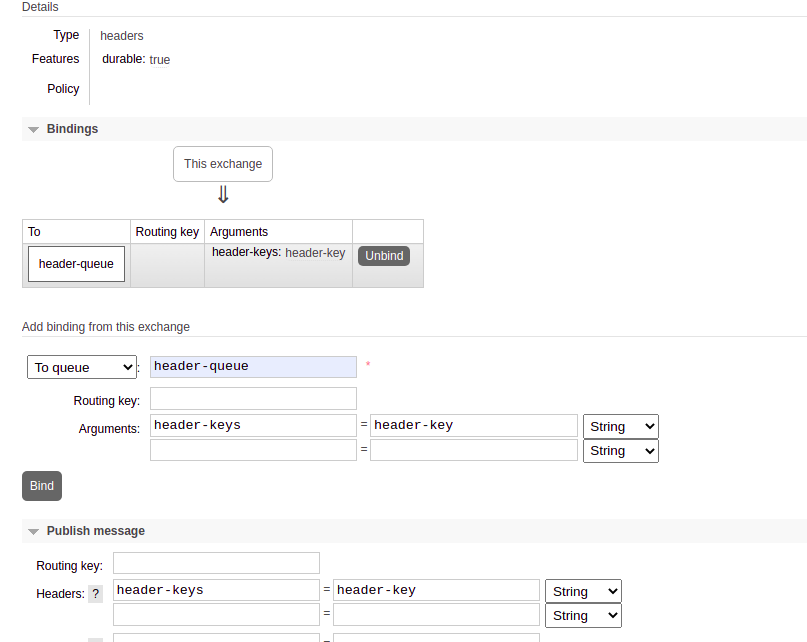
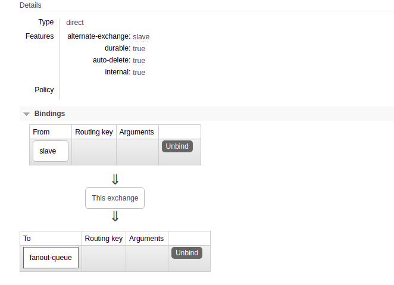

RabbitMq
RabbitMq 学习资料
- 什么是Virtual host
- 用户信息和权限
- 什么是（channel）管道
- 什么是交换机(exchange)
什么是Virtual host
- 中文含义虚拟主机，相当于在自己工作区间工作
- Vhost 即一个mini RabbitMq 为每一个单独的客户端提供对应的消息服务。
- 拥有独立的connection(连接)，channel(管道),exchange(交换机),<—banding（绑定)—>,queue(队列),权限控制
- vhost可以作为不同权限隔离的手段(一个典型的例子，不同的应用可以跑在不同的vhost中)。
用户信息和权限
查看用户角色：rabbitmqctl list_users
tag用户角色的标识，可以自定义
- 超级管理员(administrator) 可登陆管理控制台(启用management plugin的情况下)，可查看所有的信息，并且可以对用户，策略(policy)进行操作。
- 监控者(monitoring) 可登陆管理控制台(启用management plugin的情况下)，同时可以查看rabbitmq节点的相关信息(进程数，内存使用情况，磁盘使用情况等)
- 策略制定者(policymaker) 可登陆管理控制台(启用management plugin的情况下), 同时可以对policy进行管理。但无法查看节点的相关信息(上图红框标识的部分)。 与administrator的对比，administrator能看到这些内容
- 普通管理者(management) 仅可登陆管理控制台(启用management plugin的情况下)，无法看到节点信息，也无法对策略进行管理。
- 其他 无法登陆管理控制台，通常就是普通的生产者和消费者。
设置用户角色：rabbitmqctl set_user_tags User Tag
权限
权限是指用户对exchange，queue的操作权限，包括配置权限，读写权限。 配置权限是指用户对exchange，queue具有声明和删除权限。 读写权限是指用户对exchange具有发送消息的写权限。对channel具有读取消息的读权限。
1) 设置用户权限
rabbitmqctl set_permissions -p VHostPath User ConfP WriteP ReadP
(2) 查看(指定hostpath)所有用户的权限信息
rabbitmqctl list_permissions [-p VHostPath]
(3) 查看指定用户的权限信息
rabbitmqctl list_user_permissions User
什么是管道 channel
网络信道，几乎所有操作都在channel中进行，channel是消息读写的通道。客户端可以建立多个channel，每个channel表示一个会话任务。
什么是交换机Exchange
交换机，接受消息，根据路由键转发消息到绑定的队列上
exchange相关配置

fanout
Fanout 不处理路由键。你只需要简单的将队列绑定到交换机上。一个发送到该类型交换机的消息都会被广播到与该交换机绑定的所有队列上。，无需使用banding key ，即无需routing key 进行对应查找。 
direct
Direct完整匹配,你需要将队列绑定到交换机，并且配置一个独特的routing key。 
topic
Topic 类似于Direct模糊匹配，你需要将队列绑定到交换机，并且配置一个独特的Exp。符号“#”匹配一个或多个词，符号“*”只能匹配一个词。

- push消息时Routing key －－－ topic-key.123 会推送到对应topic-key.*中，
- push消息时Routing key －－－ topic-key.1 会推送到对应topic-key.*和topic-key.#中，

header
Headers 不处理routing key,需要绑定一个队列是绑定header，这里绑定的是一个key-value格式。（可以是hashMap等数据格式和前面类型不同的是前面必须是String类型）

Internal属性，Arguments（alternate-exchange）使用
- 新建一个slave名称
exchange，作为接受消息的交换。正常设置。 - 新建一个master名称
exchange设置对应的属性Internal=yes，alternate-exchange＝slave。绑定一个queue作为消息接受队列.绑定slave｀exchange｀作为消息的接受方。  - 在slave中推送消息，master对应的绑定的队列会收到消息。（
exchange的type等要保持一致）
- 原文作者：cherubr
- 原文链接：https://cherubr.github.io/post/storage/hugo/
- 版权声明：本作品采用知识共享署名-非商业性使用-禁止演绎 4.0 国际许可协议进行许可，非商业转载请注明出处（作者，原文链接），商业转载请联系作者获得授权。